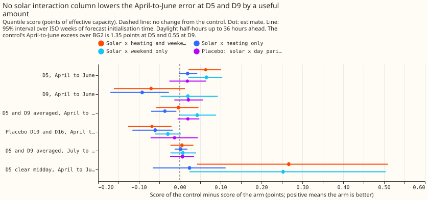
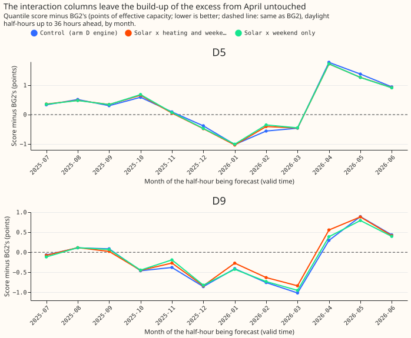

Does letting the solar term interact with temperature and day type close the April-to-June gap to BG2?
Letting rooftop solar interact with temperature and with the day of the week does not close the April-to-June gap to BG2. BG2 is the production-style XGBoost forecast of experiment 87. In April to June, on daylight half-hours up to 36 hours ahead, our convex demand model scores worse than BG2 at two anonymised Primary substations, D5 and D9. That score difference is the gap. The convex model is experiment 136's arm A2, a monthly refit of experiment 114's T-all model (a model that is linear in its coefficients) with a Kalman filter that corrects the forecast using recent errors. We added two columns that let the solar term vary: the solar shape times a heating hinge (how far the temperature falls below 15.5 degrees Celsius, divided by 10), and the solar shape times a weekend indicator. At D5 and D9 averaged, the two columns closed -0.4% of the gap (95% interval -6.3% to +4.7%), which is none of it. Two linear interaction columns therefore do not explain the gap. The next test is what BG2 uses that the convex demand model does not.
The scores are quantile scores on the 561,207 rows of experiments 228, 251, 266, and 289. A row is one substation, one forecast initialisation time, and one half-hour being forecast (valid time). The quantile score is twice the mean pinball loss over 11 quantiles, in points of effective capacity (percentage points of a substation's rated demand), and lower is better. "Excess" is the control's score minus BG2's, and "closure" is the share of the excess that an arm removes. Rows are daylight half-hours up to 36 hours ahead, as in experiment 289, and intervals resample whole ISO weeks of forecast initialisation time (14 weeks in April to June). The control is experiment 136's stored A2 fits run through this folder's forecast pipeline. The pipeline reproduces A2's stored quantiles to 0.0 points.


Results
- Verdict
refuted. Prediction P1 (closure of at least 30% at each of D5 and D9) fails: closure is +4.7% at D5 (95% interval +1.6% to +7.7%) and -12.7% at D9 (-39.3% to +1.9%). The D5-and-D9 average of -0.4% is under the 10% threshold below which the decision rule refutes the hypothesis. - P2 fails. At D10 and D16 the both-column arm worsens the score by 0.068 points (95% interval 0.020 to 0.126 points worse), more than the 0.02 allowed.
- P3 holds. July to September at D5 and D9 moves by +0.005 points (interval -0.023 to +0.033).
- P4 holds. The placebo column (solar shape times day-of-year parity) closes +2.1% (interval -0.6% to +5.7%) at D5 and D9.
- Excess of the control, April to June. D5 +1.354 (95% interval +1.032 to +1.652); D9 +0.555 (+0.336 to +0.780); D5 and D9 averaged +0.954 (+0.723 to +1.172). BG2 scores 3.419 at D5 and 2.762 at D9; the control scores 4.772 and 3.317.
- Reduction against the control (points of quantile score; positive is better), D5 and D9 averaged. Both columns -0.003 (-0.058 to +0.046); heating only -0.037 (-0.070 to -0.008); weekend only +0.043 (-0.000 to +0.089); placebo +0.020 (-0.005 to +0.048). At D5 alone the weekend column lowers the score by 0.065 (+0.021 to +0.104), and the placebo column lowers the score by 0.019 (-0.025 to +0.064).
- Clear midday half-hours at D5. These are the 643 half-hours in April to June, daylight, up to 36 hours ahead, with a realised clear-sky index above 0.8 and hour 10 to 14 in experiment 178's rows. The control's excess is +3.50 (interval +2.65 to +4.21), larger than the +1.67 that experiment 299 found over clear half-hours at all hours of the day. The both-column arm lowers the score by 0.267 (+0.042 to +0.510), 7.6% of the control's excess. Heating alone lowers the score by 0.024 (-0.066 to +0.112).
- Tail calibration, April to June, daylight, up to 36 hours ahead, D5 and D9 pooled (control / both-column arm). Share of actuals at or below the 0.01 quantile 1.84% / 1.82%; the 0.05 quantile 7.95% / 8.87%; the 0.95 quantile 91.0% / 91.3%; the 0.99 quantile 96.4% / 96.3%. Pinball loss at 0.01 is 0.249 / 0.244, at 0.05 0.943 / 0.935, at 0.95 1.060 / 1.066, and at 0.99 0.326 / 0.343. Both arms are too narrow in both tails: 3.6% of actuals lie above the 0.99 quantile, and 8% to 9% lie at or below the 0.05 quantile. The interaction columns do not change those shares by more than 1 percentage point.
- Analysis added after the results were seen: stored arm D. Stored arm D (experiment 220's forecast) is a close relative of the control, not the control: their per-row scores differ by 0.51 points on average in absolute value, and the control's mean score is 0.039 points higher. Shifting stored arm D's quantiles by each arm's change in the mean forecast, as experiments 251 and 289 do, gives the same answer: the both-column arm closes +0.6% at D5 and D9 averaged, with stored arm D's excess at 0.951.
- Fitted coefficients (
report.json). The weekend column's coefficient is positive in the last monthly fit at every substation: 5 to 10 points per unit of solar shape when the column is alone, and 3 to 11 in the both-column arm. On weekends the fit therefore reduces the weight of the pinned solar subtraction (the solar output at the capacity held fixed for each fit). The placebo column's coefficient is positive too (3.1 at D5), so a part of the weekend coefficient is a correction to the solar shape that holds on every day. - What the figures show. The excess at D5 and D9 steps up between March and April. The interaction arms follow the control closely (figure 2), and the gain of the weekend column at D5 is too small to move the monthly curve.
Checks
- Median minus mean forecast, per site. The quantiles are the mean forecast plus a residual table with median zero, so the difference is 0.0 at every site, for the control and the both-column arm.
- Error of the mean forecast beside the score. Mean absolute error of the mean forecast, April to June, daylight, up to 36 hours ahead, in points of effective capacity, control / both-column arm: D5 8.45 / 8.33, D9 5.97 / 6.12, D10 6.51 / 6.60, D16 6.09 / 6.27. The signs agree with the score contrasts (better at D5, worse elsewhere).
- Leaving one site out flips the sign of the both-column contrast. The closure is +4.7% at D5 alone and -12.7% at D9 alone, and both are under the 10% threshold, so the verdict does not change.
- A nested arm beats the arm that contains it. Weekend only (+0.043) beats both columns (-0.003), because the heating column worsens D9 (heating only: -0.092, interval -0.170 to -0.027).
- Controls. The control reproduces experiment 136's stored A2 quantiles to 0.0 points at all six substations, and the placebo closes 2.1%, under 10%, so neither control fails.
Method and caveats
- Arms. Control (
a2): experiment 136's stored monthly T-all fits.s_both,s_heat,s_wknd,s_placebo: T-all refitted at the same 27 monthly refit dates with the extra column or columns, free in sign, with the ridge penalty of 0.1 that the heating columns use. The columns multiply the derated unit solar shape by the mean heating hinge over the four smoothed temperatures, by the weekend indicator (Saturday, Sunday, or bank holiday), or by the day-of-year parity. The filter noise, the calibration, the spread table, and the tuning months are as in arm A2. No neural-network head, export clip, or coasting is applied. - Collinearity. The new columns carry a ridge penalty of 0.1, which is small beside the Gram matrix of 24 months of rows, so they are effectively unpenalised. Their coefficients are large and move with the other columns (the heating column's coefficient is -1.8 at D5 and +8.4 at D9 in the both-column arm), which may contribute to the worse scores at D9, D10, and D16.
- Schedule. Monthly refits on a rolling 24-month window, as arm D.
- The columns live in this experiment's copy of experiment 114's design code, not as a
studies.dp_gamoption. The one-averaged-hinge form and free signs are one defensible design of several. A per-smoothing-window hinge or a sign-bounded column is untested. - The intervals resample only 14 weeks of April to June. Only two substations, D5 and D9, show the gap.
- The headline closure is against the control, which differs from stored arm D (see the analysis added after the results were seen).
What the next experiment should answer
- Item 5 of the summer-gap brief (what BG2 uses that arm D does not). Two linear interaction terms did not explain the gap. Two candidates not yet tested are BG2's interactions between irradiance and recent power, and its use of the realised past.
- A small neural interaction term (ranked suggestion, per the common brief). A learned smooth response of demand to the solar shape, temperature, and hour, inside the convex fit, with the convex arm as the comparison. The prediction that could fail: the neural term closes under 10% of the D5 and D9 excess, as the two linear terms did. A run is worth the effort only if the maintainer wants to rule out a smooth interaction of any shape.